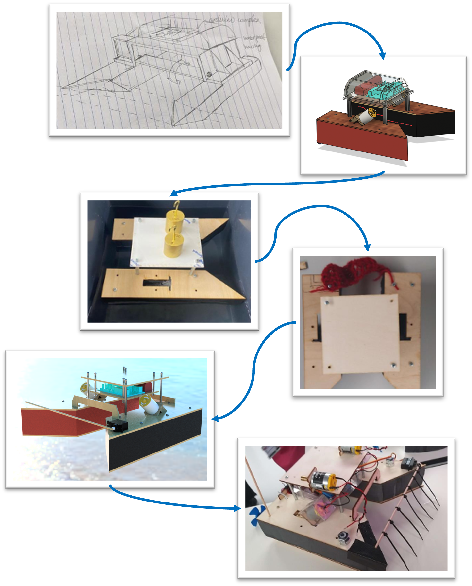
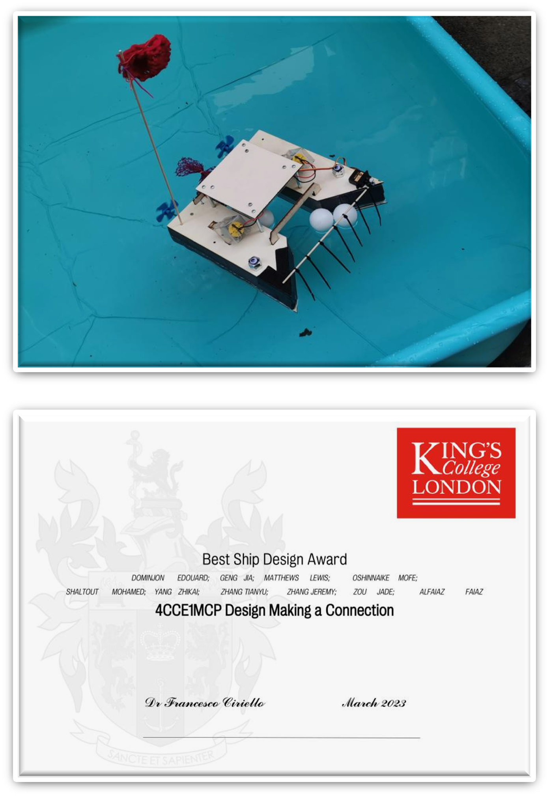

Compliant Upper-Body
Split-Hook
Overview & Right
Duration: 6 weeks
Position: Project Manager and Designer
Time: Spring 2023 (1st Year)
Trillions of pieces of plastic pollute the oceans today and with the continued dumping of waste into the ocean this will only worsen. Plastic has had a devastating impact on marine wildlife and ecosystems.
Even if we stopped all plastic pollution, our oceans still need to be cleaned as plastics persist for many decades.
The goal of the project was to design, build and test an RC ship model and then demonstrate its operation in a water tank. Collecting a specified amount of surface level waste within a target time was the end goal. My job within the team was to manage the team and to design the general boat architecture alongside the collection system.
The module was based on The Ocean Cleanup projects.
Design Process

Starting from sketches is the best way to communicate ideas between team members and can help one refine their own thoughts into a feasible design. This is the starting point I used for all of my projects.
Employing the use of a catamaran allowed for better balance compared to a monohull design. The connection point between the two pontoons also allowed me to create storage for the electronics which were safe from water damage. I used standoffs and laser cut plywood so I could screw the different components together, this allowed us to design and manufacture iteratively. For example, we needed to increase the capacity of the electronics storage. This was an easy fix as we were able to redesign just the housing and not the entire ship, reducing material and time consumption.
Originally, I designed the collection system to be a passive catcher, made from a mesh I knitted to capture the waste, to reduce the over reliance on electronics. However, in the event of reversal, the waste will exit the ship. Due to the constraints in time, I just used zip ties attached to a wooden dowel attached to a servo motor. Whilst it was effective this taught me to test as soon as possible when designing anything.
End Result

The boat was successful in completing the required task and won the best ship design out of the whole cohort due to its modular design.
This was my first ever group activity where we had to make something as a collaborative, this is where I was able to play around with ideas of sustainability and making my design modular which not only made it easier to prototype and change aspects of the design but also allowed us to produce less waste.